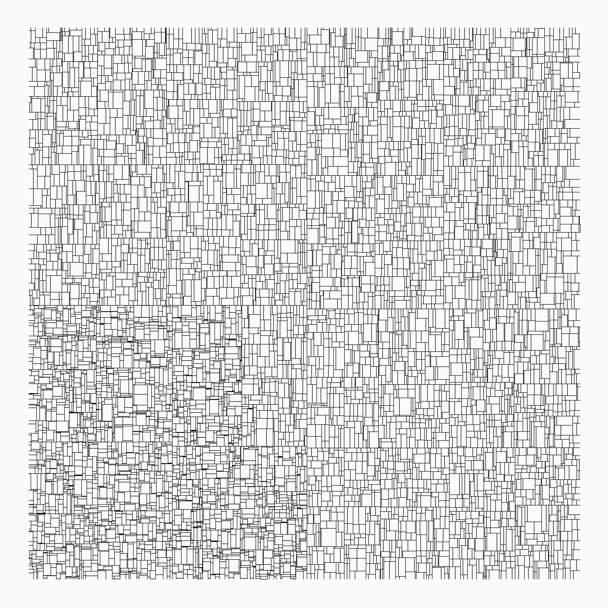

Welcome!
My name is Vit Gabrhel, and I am a data enthusiast.
I started my data journey as a researcher in the mobility field, but nowadays, I envision myself on the road of becoming a "full-stack data scientist".
I believe that data could serve not only as a way to understand the world but also to appreciate its beauty. Just take a look at the following example of the generative art located bellow. It is based solely on a data simulation, a k-d tree algorithm.
Also, I am convinced that insights from data can be transformed into action and so benefit many. May it be an evidence-based policy in public health, or an application like mobility manager making lives easier. For that to be possible, data must be available; data must flow. Hence the name of the page.
This web serves as a space to present my work and ideas. Here, you may find blog posts on data projects, be that applications, analyses from various domains such as mobility or culture, or tools (R and Python). Also, feel free to refresh yourself by some of my takes on generative art or urban and landscape photography.
Have questions or suggestions? Feel free to open an issue on GitHub or ask me on Twitter.
Thanks for reading!
